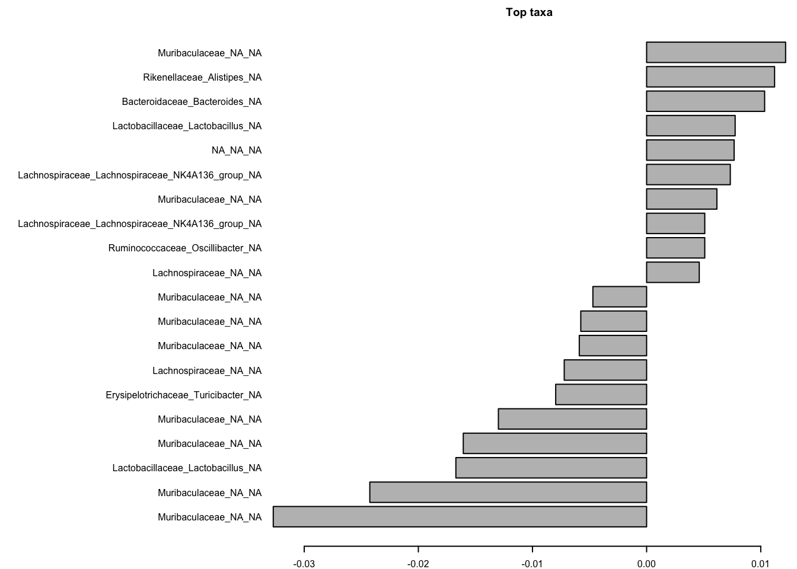

5 Downstream Analysis
5.1 Phyloseq
Once we are finished using the dada2 package, we will have a sequence table and taxonomy table.
Lets look at the metadata files we have to get more information about these samples.
library(ggplot2)
library(dplyr)##
## Attaching package: 'dplyr'## The following objects are masked from 'package:stats':
##
## filter, lag## The following objects are masked from 'package:base':
##
## intersect, setdiff, setequal, uniontime_info<-read.delim("~/projects/16sanalysis_workshop/workshoptutorial/MiSeq_SOP/mouse.time.design",sep = "\t")
dpw_info<-read.delim("~/projects/16sanalysis_workshop/workshoptutorial/MiSeq_SOP/mouse.dpw.metadata",sep = "\t")
sample_info<-left_join(time_info,dpw_info,by="group")
rownames(sample_info)<- sample_info$group
sample_info## group time dpw
## F3D0 F3D0 Early 0
## F3D1 F3D1 Early 1
## F3D141 F3D141 Late 141
## F3D142 F3D142 Late 142
## F3D143 F3D143 Late 143
## F3D144 F3D144 Late 144
## F3D145 F3D145 Late 145
## F3D146 F3D146 Late 146
## F3D147 F3D147 Late 147
## F3D148 F3D148 Late 148
## F3D149 F3D149 Late 149
## F3D150 F3D150 Late 150
## F3D2 F3D2 Early 2
## F3D3 F3D3 Early 3
## F3D5 F3D5 Early 5
## F3D6 F3D6 Early 6
## F3D7 F3D7 Early 7
## F3D8 F3D8 Early 8
## F3D9 F3D9 Early 9Lets make a phyloseq object
Now that we have sample_info lets try to make a phyloseq object out of this
library(phyloseq)
taxa<-readRDS("~/projects/16sanalysis_workshop/workshoptutorial/output/taxa.rds")
seq<-readRDS("~/projects/16sanalysis_workshop/workshoptutorial/output/seq.rds")
ps <- phyloseq(otu_table(seq,taxa_are_rows = F),
sample_data(sample_info),
tax_table(taxa))
ps## phyloseq-class experiment-level object
## otu_table() OTU Table: [ 234 taxa and 19 samples ]
## sample_data() Sample Data: [ 19 samples by 3 sample variables ]
## tax_table() Taxonomy Table: [ 234 taxa by 7 taxonomic ranks ]You can see that this object has an OTU table(ASV table), sample data and tax_table. You can use functions tax_table(), sample_data() and otu_table() to access the data.
Take a look at:
- subset_samples()
- subset_taxa()
- tax_glom()
- sample_sums()
- prune_samples()
- transform_sample_counts()
- psmelt()
ps2<-tax_glom(ps,taxrank = "Phylum")
ps2 = transform_sample_counts(ps2, function(x) x/sum(x))
pmelt<-psmelt(ps2) %>% arrange(desc(Abundance))
cutoff<-0.005
pmelt_filt<-pmelt %>% group_by(Phylum,time) %>% filter(sum(Abundance) >cutoff)
ggplot(pmelt_filt,aes(x=Sample,y=Abundance,color=Phylum,fill=Phylum)) +geom_bar(stat = "identity")
pmelt_filt %>% group_by(time,Phylum) %>% summarise(mean_Abundance=mean(Abundance)) %>% ggplot(.,aes(x=time,y=mean_Abundance,fill=Phylum)) +geom_bar(stat="identity")## `summarise()` has grouped output by 'time'. You can override using the
## `.groups` argument.Figure out how to change the colors to custom colors!!
pmelt_filt %>% group_by(time,Phylum) %>% summarise(mean=mean(Abundance))## `summarise()` has grouped output by 'time'. You can override using the
## `.groups` argument.## # A tibble: 12 × 3
## # Groups: time [2]
## time Phylum mean
## <chr> <chr> <dbl>
## 1 Early Actinobacteria 0.00133
## 2 Early Bacteroidetes 0.592
## 3 Early Cyanobacteria 0.000594
## 4 Early Firmicutes 0.378
## 5 Early Patescibacteria 0.00285
## 6 Early Proteobacteria 0.00331
## 7 Early Tenericutes 0.0218
## 8 Late Actinobacteria 0.00472
## 9 Late Bacteroidetes 0.716
## 10 Late Firmicutes 0.269
## 11 Late Patescibacteria 0.000993
## 12 Late Tenericutes 0.008455.2 Alpha Diversity
Alpha Diversity: Variety and abundance of organisms within a sample
Species richness: The number of different kinds of organisms present in a particular community
Species evenness Compares the uniformity of the population size of each of the species present
There are different alpha diversity measures to calculate the biodiversity including Simpson, Shannon, and Observed. These indexes show different estimates of magnitude of change in the niche giving us a more complete picture. There are differences in these indexes in weighting and unit:
Simpson: Estimator of species richness and species evenness, but provides more weight to evenness resulted from the sum of squared proportions.
Shannon: Estimator of species richness and species evenness, but provides more weight to richness than evenness and is shown as a logarithmic value.
Observed: Abundance-based estimator of species richness. This index calculates the minimal number of OTUs (rare OTUs) present in a sample. This index gives more weight to the low abundant species.
richness<-estimate_richness(ps)
richness$time<-ps@sam_data$time
ggplot(richness,aes(x=time,y=Shannon,color=time)) + geom_boxplot() +geom_jitter()
wilcoxon_shannon <- wilcox.test(Shannon ~ time, data = richness)
wilcoxon_shannon##
## Wilcoxon rank sum exact test
##
## data: Shannon by time
## W = 65, p-value = 0.1128
## alternative hypothesis: true location shift is not equal to 05.3 Beta Diversity
Beta diversity is a measure of dissimilarity in microbial composition between two samples.
Distance metrics: Bray–Curtis method does not look at the phylogenetic relatedness and takes the taxa abundance into consideration. This distance is defined as the difference of the abundance divided by the total abundance contributed by both samples. Unifrac method calculates the distances between samples based on their phylogenetic relatedness. There are two unifrac measures: unweighted UniFrac, a qualitative measure that takes presence/absence of data into consideration to compare community composition. This suggests if ecological factors prevent a taxonomic group from occupying certain habitats.Weighted UniFrac, a quantitative measure weights the branches of a phylogenetic tree based on the the the relative abundance of species/taxa. This suggests if ecological differences between habitats have caused the abundance of taxonomic groups to change.
# Calculate Bray-curtis dissimilarity
ord<-ordinate(ps,method = "PCoA",distance = "bray")
# plot ordination
plot_ordination(ps,ordination = ord,color="time",title="Bray PCoA (No transformation)")+ scale_colour_manual(values=(c("tomato","blue")))
# plot ordination with relative abundance values
ps %>%
transform_sample_counts(., function(x) x/sum(x)) %>%
plot_ordination(., ordinate(., method="PCoA", distance="bray"),
color="time" ,title="Bray PCoA (Relative Abundance)")+ scale_colour_manual(values=(c("tomato","blue"))) + geom_point()#%>% #+ theme_bw()
# plot ordination with log transfromed values
ps %>%
transform_sample_counts(., function(x) log(1 + x)) %>%
plot_ordination(., ordinate(., method="PCoA", distance="bray"),
color="time" ,title="Bray PCoA (log transfomed)")+ scale_colour_manual(values=(c("tomato","blue"))) + geom_point()#%>% #+ theme_bw()
# Permanova ()
ps_rel<- ps %>% transform_sample_counts(., function(x) x/sum(x))
asv <- as.matrix(ps_rel@otu_table@.Data)
colnames(asv)<-paste0(ps_rel@tax_table[,5],"_",ps_rel@tax_table[,6],"_",ps_rel@tax_table[,7])
meta <- data.frame(ps_rel@sam_data)
permanova <- vegan::adonis(asv ~ time,
data = meta, permutations=999, method = "bray")
coef <- coefficients(permanova)["time1",]
top.coef <- coef[rev(order(abs(coef)))[1:20]]
par(mar = c(2, 24, 2, 1),cex=0.5)
barplot(sort(top.coef), horiz = T, las = 1, main = "Top taxa")
5.4 Differential Abundance Analysis
Differential abundance analysis is performed between two condition or time points to find taxa that have either bloomed or depleted from one condition compared to another. There is a variety of tests that can be used to perform this analysis like DESeq2, ANCOM-BC, Corncob to name a few.
5.4.1 DESEQ2
For demonstration purpose, we will use DESeq2 here.It internally performs data normalization and does p-value correction. It used a negative binomial distribution to detect differences in read counts between groups.To fully understand the method you can watch this detailed video by Statquest here
library(DESeq2)## Loading required package: S4Vectors## Loading required package: stats4## Loading required package: BiocGenerics##
## Attaching package: 'BiocGenerics'## The following objects are masked from 'package:dplyr':
##
## combine, intersect, setdiff, union## The following object is masked from 'package:limma':
##
## plotMA## The following objects are masked from 'package:stats':
##
## IQR, mad, sd, var, xtabs## The following objects are masked from 'package:base':
##
## anyDuplicated, append, as.data.frame, basename, cbind, colnames,
## dirname, do.call, duplicated, eval, evalq, Filter, Find, get, grep,
## grepl, intersect, is.unsorted, lapply, Map, mapply, match, mget,
## order, paste, pmax, pmax.int, pmin, pmin.int, Position, rank,
## rbind, Reduce, rownames, sapply, setdiff, sort, table, tapply,
## union, unique, unsplit, which.max, which.min##
## Attaching package: 'S4Vectors'## The following objects are masked from 'package:dplyr':
##
## first, rename## The following objects are masked from 'package:base':
##
## expand.grid, I, unname## Loading required package: IRanges##
## Attaching package: 'IRanges'## The following object is masked from 'package:phyloseq':
##
## distance## The following objects are masked from 'package:dplyr':
##
## collapse, desc, slice## Loading required package: GenomicRanges## Loading required package: GenomeInfoDb## Loading required package: SummarizedExperiment## Loading required package: MatrixGenerics## Loading required package: matrixStats##
## Attaching package: 'matrixStats'## The following object is masked from 'package:dplyr':
##
## count##
## Attaching package: 'MatrixGenerics'## The following objects are masked from 'package:matrixStats':
##
## colAlls, colAnyNAs, colAnys, colAvgsPerRowSet, colCollapse,
## colCounts, colCummaxs, colCummins, colCumprods, colCumsums,
## colDiffs, colIQRDiffs, colIQRs, colLogSumExps, colMadDiffs,
## colMads, colMaxs, colMeans2, colMedians, colMins, colOrderStats,
## colProds, colQuantiles, colRanges, colRanks, colSdDiffs, colSds,
## colSums2, colTabulates, colVarDiffs, colVars, colWeightedMads,
## colWeightedMeans, colWeightedMedians, colWeightedSds,
## colWeightedVars, rowAlls, rowAnyNAs, rowAnys, rowAvgsPerColSet,
## rowCollapse, rowCounts, rowCummaxs, rowCummins, rowCumprods,
## rowCumsums, rowDiffs, rowIQRDiffs, rowIQRs, rowLogSumExps,
## rowMadDiffs, rowMads, rowMaxs, rowMeans2, rowMedians, rowMins,
## rowOrderStats, rowProds, rowQuantiles, rowRanges, rowRanks,
## rowSdDiffs, rowSds, rowSums2, rowTabulates, rowVarDiffs, rowVars,
## rowWeightedMads, rowWeightedMeans, rowWeightedMedians,
## rowWeightedSds, rowWeightedVars## Loading required package: Biobase## Welcome to Bioconductor
##
## Vignettes contain introductory material; view with
## 'browseVignettes()'. To cite Bioconductor, see
## 'citation("Biobase")', and for packages 'citation("pkgname")'.##
## Attaching package: 'Biobase'## The following object is masked from 'package:MatrixGenerics':
##
## rowMedians## The following objects are masked from 'package:matrixStats':
##
## anyMissing, rowMedians## The following object is masked from 'package:phyloseq':
##
## sampleNamesdds<-phyloseq_to_deseq2(ps,design = ~time)## converting counts to integer mode## Warning in DESeqDataSet(se, design = design, ignoreRank): some variables in
## design formula are characters, converting to factorsdds <- DESeq(dds)## estimating size factors## estimating dispersions## gene-wise dispersion estimates## mean-dispersion relationship## final dispersion estimates## fitting model and testing## -- replacing outliers and refitting for 22 genes
## -- DESeq argument 'minReplicatesForReplace' = 7
## -- original counts are preserved in counts(dds)## estimating dispersions## fitting model and testingres <- results(dds)
df <- as.data.frame(res)
# Orders the rows of data frame in increasing order firstly based on column
# "log2FoldChange" and secondly based on "padj" column
df <- df %>% arrange(log2FoldChange, padj)